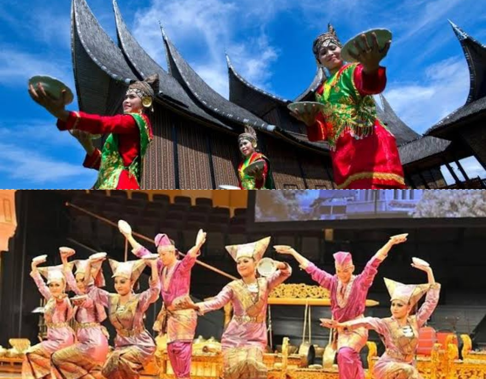
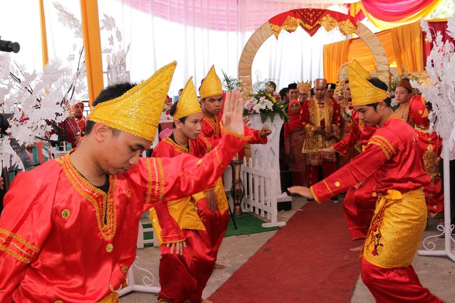

Budaya Minangkabau
Warisan budaya khas Sumatera Barat yang lestari.

Tari Piring
Tarian tradisional menggunakan piring sebagai properti.

Tari Pasambahan
Tarian penyambutan tamu kehormatan khas Minang.

Pacu Jawi
Tradisi pacuan sapi khas Tanah Datar, Sumatera Barat.